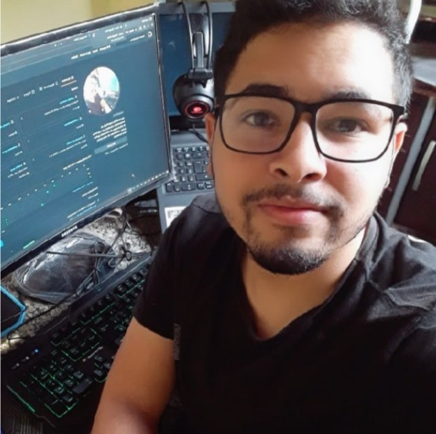
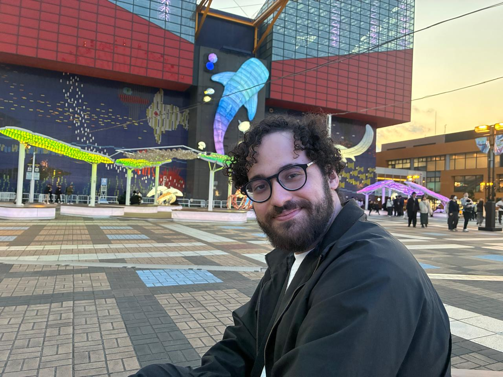

Autores
Ramon Martins
Fundador · CloudSec & Mobile
Pesquisador de segurança da informação, fundador do projeto RSI na UFC. Especialista em pentest mobile (iOS, Android) e cloud security.
OSEP
PortSwigger HoF
Mateus Santos
Engenharia Reversa · Análise de Malware
Pesquisador de ameaças e mantenedor do blog. Membro do RSI desde 2018, focado em análise estática/dinâmica e detecção de trojans.
Davi Chaves
Windows Internals · Malware Dev
Especialista em segurança defensiva. Pesquisador de engenharia reversa, Windows Internals e desenvolvimento de malware nativo.

Isaias do Carmo
CloudSec · DevSecOps
Arquiteto de Soluções com foco em Cloud. Pesquisa e aplica práticas de CloudSec e DevSecOps em ambientes Azure e Oracle Cloud.
Azure Architect Expert
Oracle Architect

Igor Benevides
Red Team · ML & GenAI
Especialista em segurança ofensiva e consultor sênior. Pesquisador de Red Team, Machine Learning e IA generativa aplicada à segurança.
OSEP